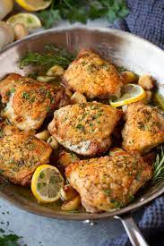

Garlic Roasted Chicken

Garlic Roasted Chicken
"Chicken again? at least its not fish wife-2018"
Ingredients
- four chicken thighs bone in skin on
- 1Tbsp salt
- 1Tbsp pepper
- 1Tbsp garlic powder
- 1tsp cumin
- 1 pinch cayanne powder
- 5 Tbsp olive oil
Steps
- preheat oven to 375 degrees F placing a foil lined pan into the heating stove
- mix seasonings in a bowl and reserve 1Tbsp olive oil for pan
- pull skin back exposing meat while still leaving skin attached
- using no more than 1 Tbsp of oil per thigh apply a light coating of oil to the bottom skinless portion as well as the tops of the pulled back skin
- apply a light coating of seasoning mixture to exposed meat on thighs then replace skin dust tops of skins with leftover spice mixture
- apply leftover olive oil to roasting pan with brush and place chicken thighs on pan and cook until an internal temp of 175 degrees F
- let chicken thighs rest for 5 minutes before plating